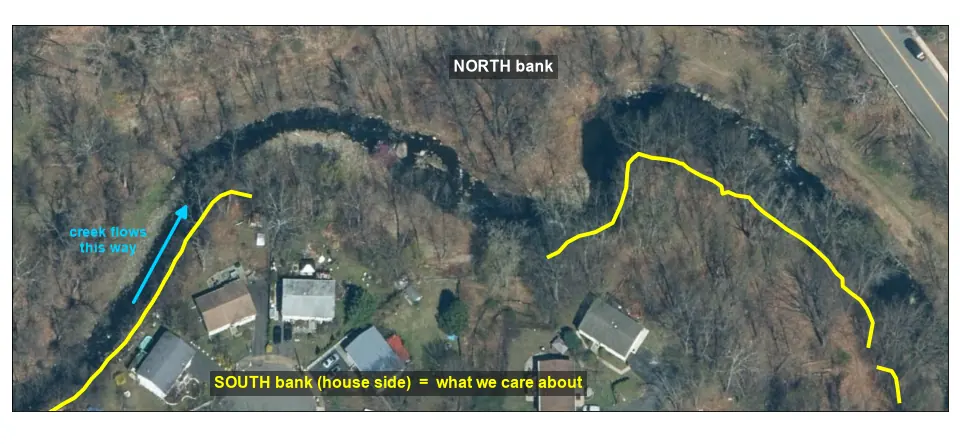

Step 1 of 10
The question

Space = play / pause · ← → = previous / next step (while you are not typing) · the animation pauses when you ask a question.
Minisceongo Creek · West Haverstraw, NY · lidar 19 Nov 2011 → 15 Apr 2022
An animated walk-through of the erosion study, step by step. Ask the project assistant about anything on screen: it runs an open-source language model on your own computer and answers only from the project notes.

Space = play / pause · ← → = previous / next step (while you are not typing) · the animation pauses when you ask a question.